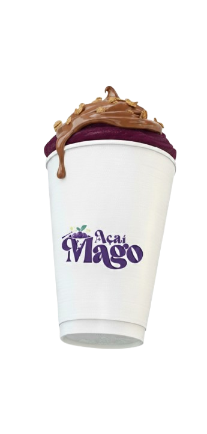

NUTELLIUM MAXIMA
Um feitiço irresistível de prazer e energia! O Nutellium Maxima combina a força do açaí com o poder doce e envolvente da Nutella.

Sem querer fazer mágica, mas nosso açaí tem um toque encantado, feito com ingredientes naturais e aquele cuidado que transforma cada colherada em um feitiço de sabor.

Do encanto das florestas brasileiras nasceu o Mago Açaí, uma marca criada para celebrar o sabor e a energia da natureza. Inspirado nas riquezas do Brasil e movido pelo desejo de levar um produto autêntico e de qualidade a todos, o Mago Açaí transforma cada tigela em uma experiência mágica.
Um feitiço irresistível de prazer e energia! O Nutellium Maxima combina a força do açaí com o poder doce e envolvente da Nutella.
O feitiço da doçura! O Morangus Deliciousus traz o frescor das frutas vermelhas misturado ao açaí cremoso.
Um feitiço 100% brasileiro! O Paçocus Encantare mistura a cremosidade do açaí com o sabor inconfundível da paçoca.
Açaí do Mago, St. Leste Q 21, Lote 08 - Gama, Brasília - DF, 72460-210
Presente nessa mágica cidade, nossa unidade é um convite para experimentar o melhor açaí, com a opção de entrega rápida via plataforma do iFood.
© 2025 Açaí do Mago. Todos os direitos reservados.